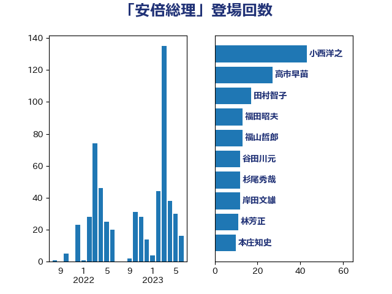

単語「安倍総理」

| 小西洋之 | 立憲民主党 | 43 回 |
| 高市早苗 | 自由民主党 | 27 回 |
| 田村智子 | 日本共産党 | 17 回 |
| 福田昭夫 | 立憲民主党 | 13 回 |
| 福山哲郎 | 立憲民主党 | 13 回 |
| 谷田川元 | 立憲民主党 | 12 回 |
| 杉尾秀哉 | 立憲民主党 | 12 回 |
| 岸田文雄 | 自由民主党 | 12 回 |
| 林芳正 | 自由民主党 | 11 回 |
| 本庄知史 | 立憲民主党 | 10 回 |
| 伊藤岳 | 日本共産党 | 10 回 |
| 梅村聡 | 日本維新の会 | 9 回 |
| 上田清司 | 国民民主党 | 9 回 |
| 蓮舫 | 立憲民主党 | 7 回 |
| 後藤祐一 | 立憲民主党 | 7 回 |
| 山岸一生 | 立憲民主党 | 7 回 |
| 青山繁晴 | 自由民主党 | 6 回 |
| 鈴木俊一 | 自由民主党 | 6 回 |
| 荒井優 | 立憲民主党 | 6 回 |
| 杉本和巳 | 日本維新の会 | 6 回 |
| 岡田克也 | 立憲民主党 | 6 回 |
| 勝部賢志 | 立憲民主党 | 6 回 |
| 辻元清美 | 立憲民主党 | 5 回 |
| 西田昌司 | 自由民主党 | 5 回 |
| 西村康稔 | 自由民主党 | 5 回 |
| 米山隆一 | 立憲民主党 | 5 回 |
| 石井章 | 日本維新の会 | 5 回 |
| 鈴木宗男 | 日本維新の会 | 4 回 |
| 野間健 | 立憲民主党 | 4 回 |
| 野田佳彦 | 立憲民主党 | 4 回 |
| 道下大樹 | 立憲民主党 | 4 回 |
| 紙智子 | 日本共産党 | 4 回 |
| 福島みずほ | 社会民主党 | 4 回 |
| 田村まみ | 国民民主党 | 4 回 |
| 田名部匡代 | 立憲民主党 | 4 回 |
| 玉木雄一郎 | 国民民主党 | 4 回 |
| 泉健太 | 立憲民主党 | 4 回 |
| 江田憲司 | 立憲民主党 | 4 回 |
| 松原仁 | 立憲民主党 | 4 回 |
| 山崎誠 | 立憲民主党 | 4 回 |
| 奥野総一郎 | 立憲民主党 | 4 回 |
| 大塚耕平 | 国民民主党 | 4 回 |
| 前川清成 | 日本維新の会 | 4 回 |
| 井坂信彦 | 立憲民主党 | 4 回 |
| 井上哲士 | 日本共産党 | 4 回 |
| 高良鉄美 | 無所属 | 3 回 |
| 阿部知子 | 立憲民主党 | 3 回 |
| 西村智奈美 | 立憲民主党 | 3 回 |
| 西村明宏 | 自由民主党 | 3 回 |
| 落合貴之 | 立憲民主党 | 3 回 |
| 田島麻衣子 | 立憲民主党 | 3 回 |
| 滝波宏文 | 自由民主党 | 3 回 |
| 沢田良 | 日本維新の会 | 3 回 |
| 水野素子 | 立憲民主党 | 3 回 |
| 櫻井周 | 立憲民主党 | 3 回 |
| 柳ヶ瀬裕文 | 日本維新の会 | 3 回 |
| 徳永久志 | 無所属 | 3 回 |
| 岸真紀子 | 立憲民主党 | 3 回 |
| 大島九州男 | れいわ新選組 | 3 回 |
| 堀井巌 | 自由民主党 | 3 回 |
| 伊波洋一 | 無所属 | 3 回 |
| 世耕弘成 | 自由民主党 | 3 回 |
| 齊藤健一郎 | 無所属 | 2 回 |
| 階猛 | 立憲民主党 | 2 回 |
| 野田国義 | 立憲民主党 | 2 回 |
| 逢坂誠二 | 立憲民主党 | 2 回 |
| 近藤和也 | 立憲民主党 | 2 回 |
| 足立康史 | 日本維新の会 | 2 回 |
| 谷合正明 | 公明党 | 2 回 |
| 谷公一 | 自由民主党 | 2 回 |
| 西銘恒三郎 | 自由民主党 | 2 回 |
| 若宮健嗣 | 自由民主党 | 2 回 |
| 舟山康江 | 国民民主党 | 2 回 |
| 福重隆浩 | 公明党 | 2 回 |
| 矢倉克夫 | 公明党 | 2 回 |
| 源馬謙太郎 | 立憲民主党 | 2 回 |
| 松本剛明 | 自由民主党 | 2 回 |
| 末松信介 | 自由民主党 | 2 回 |
| 島尻安伊子 | 自由民主党 | 2 回 |
| 山添拓 | 日本共産党 | 2 回 |
| 天畠大輔 | れいわ新選組 | 2 回 |
| 大西健介 | 立憲民主党 | 2 回 |
| 塩川鉄也 | 日本共産党 | 2 回 |
| 塩崎彰久 | 自由民主党 | 2 回 |
| 勝目康 | 自由民主党 | 2 回 |
| 加藤勝信 | 自由民主党 | 2 回 |
| 中村裕之 | 自由民主党 | 2 回 |
| 高木陽介 | 公明党 | 1 回 |
| 高木かおり | 日本維新の会 | 1 回 |
| 馬場伸幸 | 日本維新の会 | 1 回 |
| 青柳仁士 | 日本維新の会 | 1 回 |
| 鈴木英敬 | 自由民主党 | 1 回 |
| 鈴木庸介 | 立憲民主党 | 1 回 |
| 金村龍那 | 日本維新の会 | 1 回 |
| 野上浩太郎 | 自由民主党 | 1 回 |
| 遠藤敬 | 日本維新の会 | 1 回 |
| 赤嶺政賢 | 日本共産党 | 1 回 |
| 西野太亮 | 自由民主党 | 1 回 |
| 西岡秀子 | 国民民主党 | 1 回 |
| 藤川政人 | 自由民主党 | 1 回 |
| 萩生田光一 | 自由民主党 | 1 回 |
| 芳賀道也 | 国民民主党 | 1 回 |
| 舩後靖彦 | れいわ新選組 | 1 回 |
| 緒方林太郎 | 無所属 | 1 回 |
| 篠原孝 | 立憲民主党 | 1 回 |
| 笠浩史 | 無所属 | 1 回 |
| 笠井亮 | 日本共産党 | 1 回 |
| 穀田恵二 | 日本共産党 | 1 回 |
| 秋本真利 | 無所属 | 1 回 |
| 神谷裕 | 立憲民主党 | 1 回 |
| 神谷宗幣 | 参政党 | 1 回 |
| 石破茂 | 自由民主党 | 1 回 |
| 田中健 | 国民民主党 | 1 回 |
| 牧山ひろえ | 立憲民主党 | 1 回 |
| 牧原秀樹 | 自由民主党 | 1 回 |
| 渡辺周 | 立憲民主党 | 1 回 |
| 浜田靖一 | 自由民主党 | 1 回 |
| 浜地雅一 | 公明党 | 1 回 |
| 浅野哲 | 国民民主党 | 1 回 |
| 榛葉賀津也 | 国民民主党 | 1 回 |
| 柴田巧 | 日本維新の会 | 1 回 |
| 柴愼一 | 立憲民主党 | 1 回 |
| 柚木道義 | 立憲民主党 | 1 回 |
| 枝野幸男 | 立憲民主党 | 1 回 |
| 松沢成文 | 日本維新の会 | 1 回 |
| 松本尚 | 自由民主党 | 1 回 |
| 松山政司 | 自由民主党 | 1 回 |
| 東徹 | 日本維新の会 | 1 回 |
| 村田享子 | 立憲民主党 | 1 回 |
| 末松義規 | 立憲民主党 | 1 回 |
| 斎藤嘉隆 | 立憲民主党 | 1 回 |
| 斎藤アレックス | 国民民主党 | 1 回 |
| 平将明 | 自由民主党 | 1 回 |
| 岬麻紀 | 日本維新の会 | 1 回 |
| 山崎正恭 | 公明党 | 1 回 |
| 小川淳也 | 立憲民主党 | 1 回 |
| 宮本徹 | 日本共産党 | 1 回 |
| 太栄志 | 立憲民主党 | 1 回 |
| 城内実 | 自由民主党 | 1 回 |
| 城井崇 | 立憲民主党 | 1 回 |
| 國重徹 | 公明党 | 1 回 |
| 國場幸之助 | 自由民主党 | 1 回 |
| 吉良州司 | 無所属 | 1 回 |
| 吉田久美子 | 公明党 | 1 回 |
| 吉田はるみ | 立憲民主党 | 1 回 |
| 原口一博 | 立憲民主党 | 1 回 |
| 前原誠司 | 国民民主党 | 1 回 |
| 住吉寛紀 | 日本維新の会 | 1 回 |
| 仁比聡平 | 日本共産党 | 1 回 |
| 仁木博文 | 無所属 | 1 回 |
| 中谷一馬 | 立憲民主党 | 1 回 |
| 上杉謙太郎 | 自由民主党 | 1 回 |